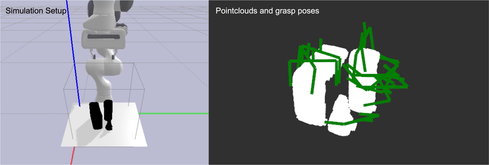
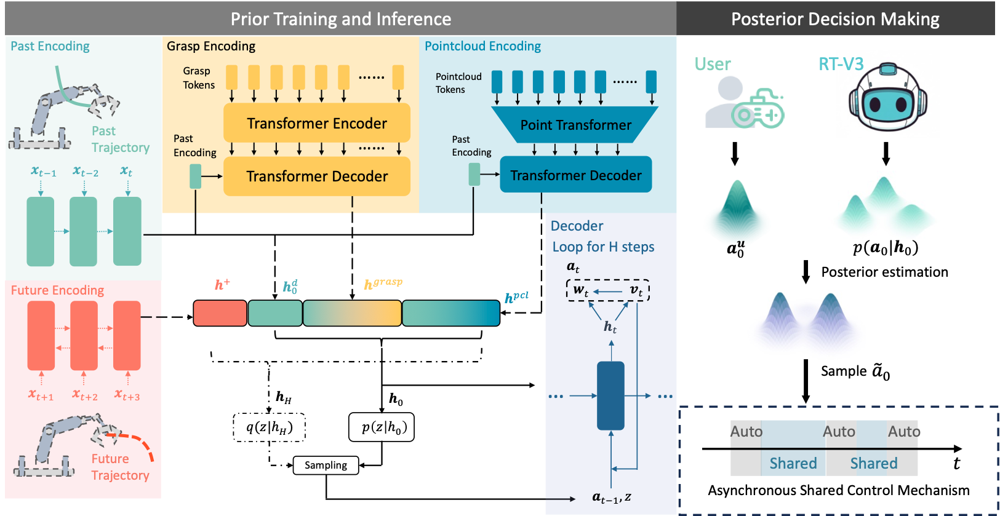
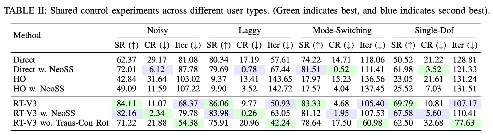
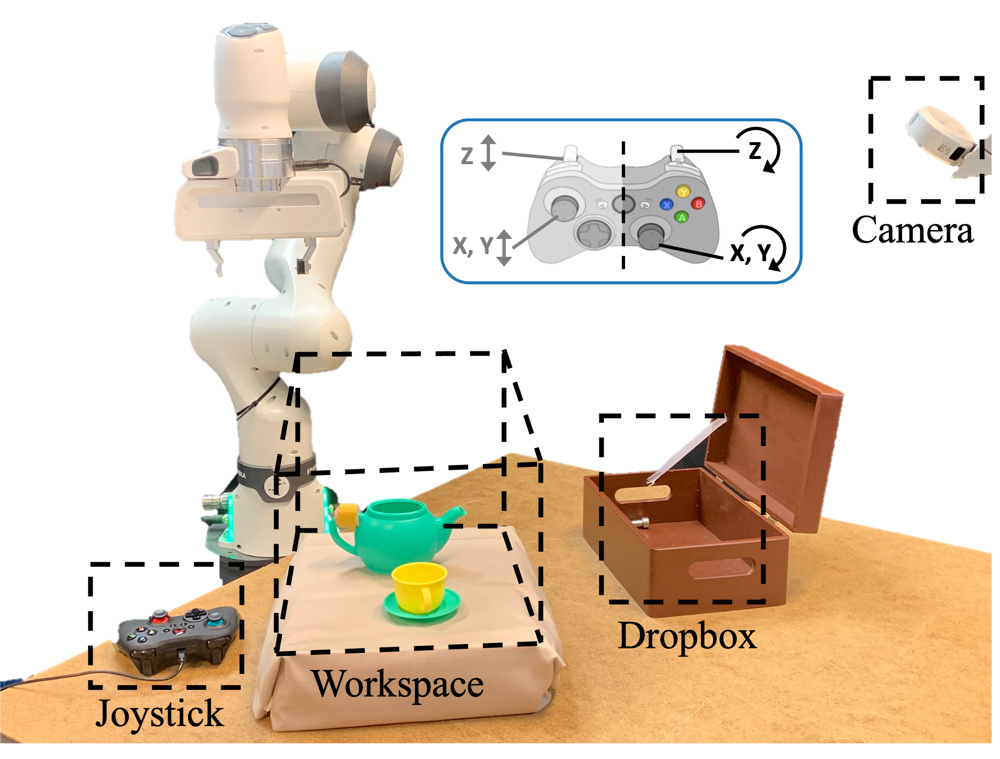
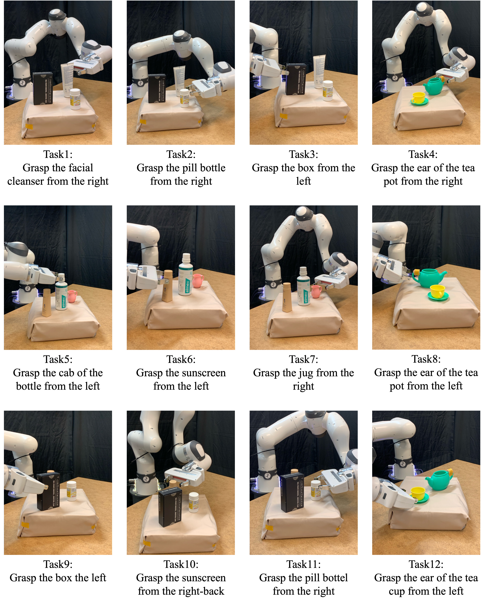

[Left] Several objects are placed in a 30 x 30 x 30 cm3 workspace, with a Franka Panda randomly positioned at the workspace edge.
[Right] Pointclouds and feasible grasp poses are pre-sampled for each scene.
Teleoperating robotic arms for high-degree-of-freedom (high-DoF) manipulation is cognitively demanding and error-prone, particularly when using low-bandwidth interfaces. To bridge this gap, we introduce Robot Trajectron V3 (RT-V3), a probabilistic shared control framework designed for SE(3) grasping tasks:

Overview of our RT-V3 framework. Robot Trajectron V3 (RT-V3) is a probabilistic shared control framework designed for SE(3) manipulation tasks. The architecture leverages a Conditional Variational Autoencoder (CVAE) to model the multi-modality of user intent. As shown in the Prior Training and Inference stage (left), the model utilizes a transformer-based architecture to encode unstructured context, including point cloud tokens and candidate grasp poses. To capture human motion patterns, the framework factorizes the action distribution into a translational distribution and a rotational distribution conditioned on translation. During Posterior Decision Making (right), RT-V3 performs Bayesian posterior estimation to fuse uncertain user commands with the learned behavioral prior, allowing for accurate intent estimation. The system also features an Asynchronous Shared Control Mechanism, which enables the robot to execute autonomous actions during periods of user inactivity, significantly reducing cognitive and physical workload.
RT-V3 predicts accurate SE(3) trajectories towards the intended goals.

[Left] Several objects are placed in a 30 x 30 x 30 cm3 workspace, with a Franka Panda randomly positioned at the workspace edge.
[Right] Pointclouds and feasible grasp poses are pre-sampled for each scene.
Four different simulated users teleoperate the robot to approach the pregrasps, while assistive algorithms provide assistive control.


Experimental Platform: The setup utilizes a 7-DoF Franka Research 3 robot and a top-down RGB-D camera to monitor the workspace. Users operate the robot using an Xbox joystick: the left joystick and triggers manage translation, while the right joystick and triggers control rotation. RT-V3 assists by fusing these manual inputs with learned behavioral priors via Bayesian posterior estimation to streamline high-DoF grasping tasks.

Diverse Manipulation Scenarios: We evaluated RT-V3 across 12 distinct tasks involving various daily objects such as pill bottles, sunscreen, and teapots. These tasks require grasping specific object parts from varied orientations (e.g., "Grasp the ear of the tea pot from the right"). The trials test the framework's ability to resolve multi-modal intent, distinguishing between different approach angles based on subtle user command cues.
RT-V3 demonstrates generalization across grasping different objects from various orientations.
@misc{fu2025tasc,
title={Robot Trajectron V3: A Probabilistic Shared Control Framework for SE(3) Manipulation},
author={Pinhao Song, Zhongxi Li, Ze Fu, Federico Ulloa Rios, Renaud Detry},
year={2025},
eprint={2509.10416},
archivePrefix={arXiv},
primaryClass={cs.RO},
url={https://arxiv.org/abs/2509.10416},
}